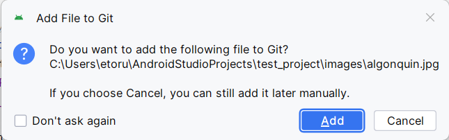
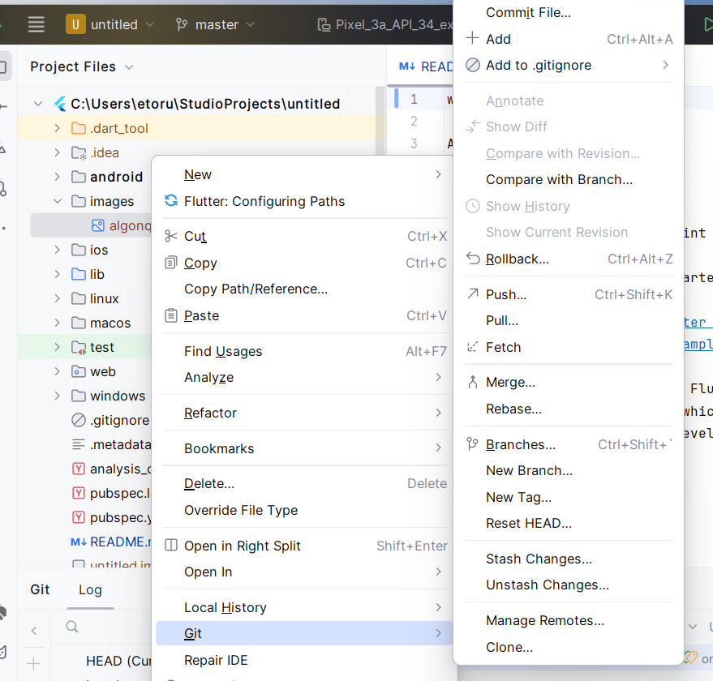
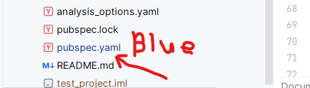
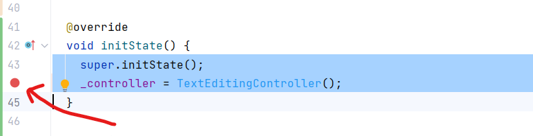
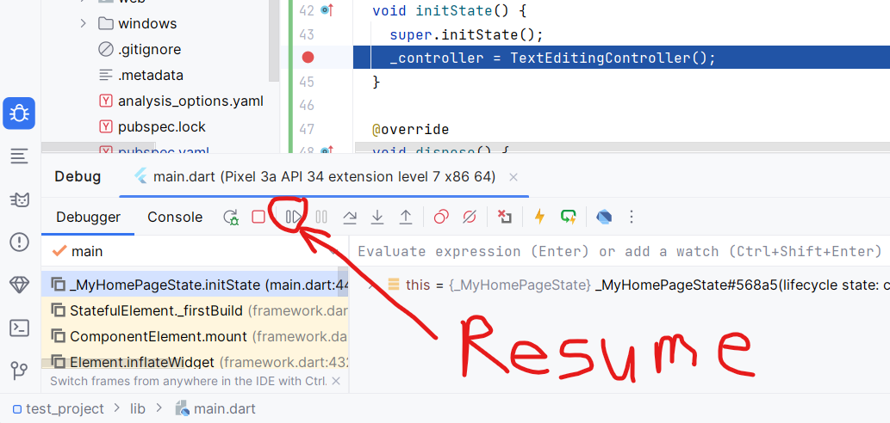
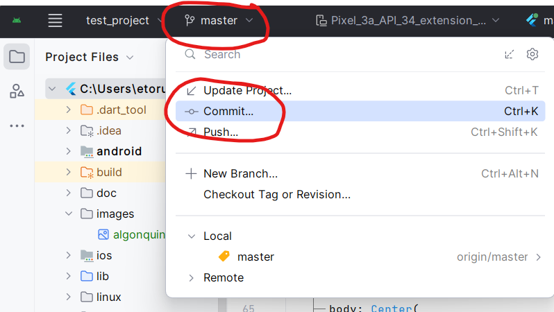
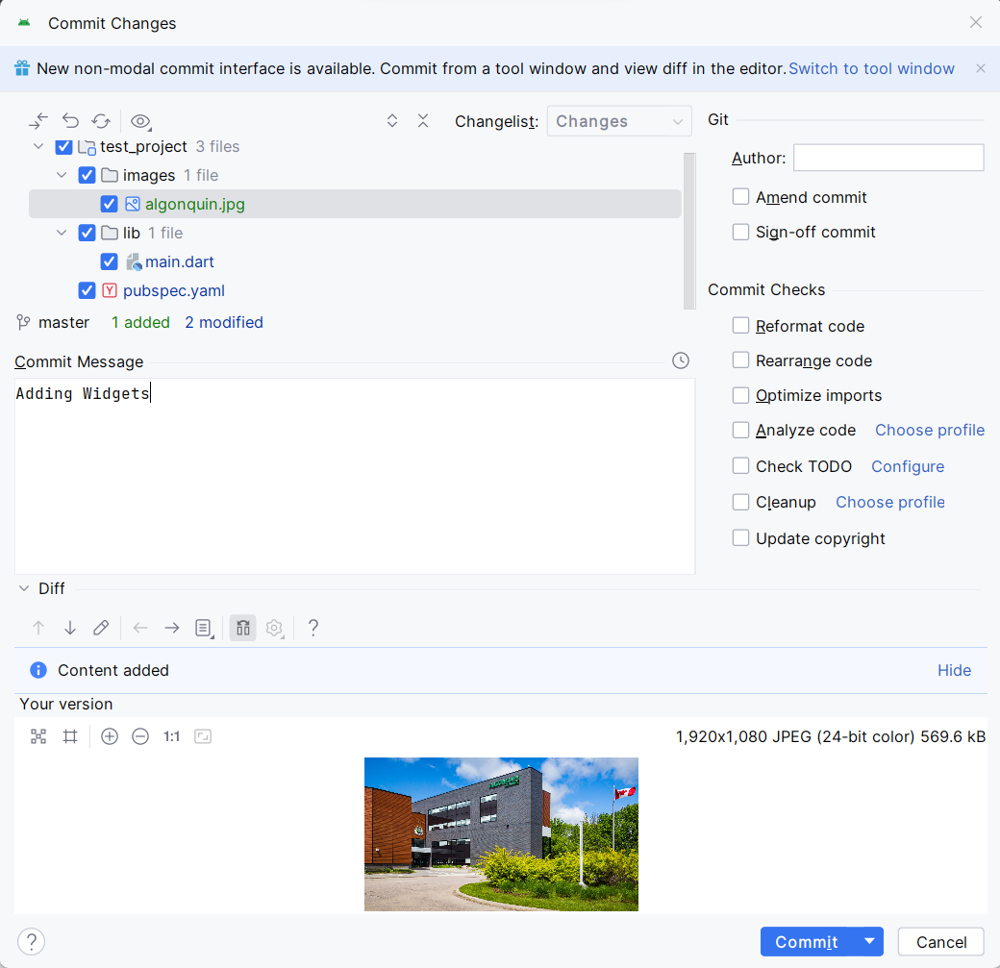
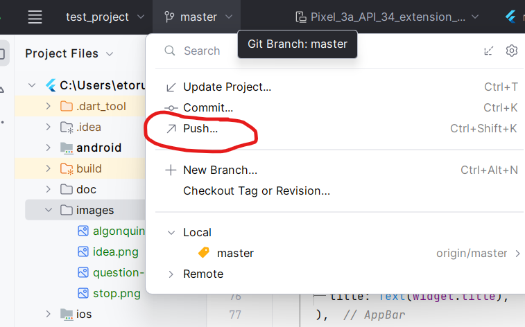

Flutter has many widgets, and we won't have time to learn them all. However, we will learn some of the basics, and you should recognize the pattern and be able to then add any Widgets you find later.
Instead of you writing code and trying to follow along with the notes, just copy the project that the professor is using. Open Android Studio, and select the "File" menu, then "New" -> "Project from Version Control". Next, it will ask you to put in the URL of the project you want to copy. Put this address in the URL field:
https://github.com/etorunski/CST2335_Summer24.git
Then click "Clone". Your Android Studio will copy all the files that are located in that repository to your computer. You should then open the project in a new window.
Images can be any of the normal image formats: JPG, PNG, GIF, BMP. Let's start by downloading an image from the internet onto our computer:
http://www.algonquincollege.com/campusservices/files/2020/04/AC-Pembroke-ZoomBackground-01-.jpg
Rename the file to algonquin.jpg to make things simple. Next in your Flutter project, create a directory called "images" in the root project folder. Then copy your algonquin.jpg file into the images folder.
Git uses a tracking list to know which files to watch for changes. When you create a new file in your project, it's not on the list. When you create a new file, or drag one over from another directory, AndroidStudio will offer to add the file to your tracking list:

Normally you would click "Add", but I want you to see what happens if you don't use the buttons.
You can also add files to the tracking list by right-clicking your mouse on the file, then selecting "Git", then "add":

Notice that the file changes from a Red colour to a Green colour. A colour of Red means that the file isn't even on the Git tracking list. A colour or Green means that the file is on the list, but has never been committed (saved) before.
Next, you must list all the images your app uses so that they get packaged along with your code. Your project has an important file called pubspec.yaml.
Open that file and look for the line: # To add assets to your application, add an assets section, like this:
Below that is where you should list the images you put in the images folder of your project:
# To add assets to your application, add an assets section, like this:
assets:
- images/algonquin.jpg
Make sure that you use 2 spaces for indenting!. There should be 2 spaces before assets:, and there should be 4 spaces before "- images/algonquin.jpg"
Notice that when you make changes to a file that has been committed, the filename changes to blue.

Next open the file main.dart from last week. Below the Text() widget saying "You have pushed the button this many times", add this:
Image.asset("images/algonquin.jpg")
Then debug your application and you should see your picture there. The image might be quite large, but you can resize the image using height: and width: parameters:
Image.asset("images/algonquin.jpg", width: 200, height:200)
Go ahead and change the width and height parameters and you should see your program react immediately without recompiling. This is a great feature of modern programming languages called "Hot swapping". It is basically changing the code of the program while it is still running. You don't need to recompile and restart your program.
At this point, let's commit our code to git.
We have already looked at Text last week, but the Text widget normally shows a String. You can also change the size of the string using the fontSize parameter.
A button is just an area on the screen that you can click on. The area can have either a Text or Image widget in it. Let's have a look:
ElevatedButton( onPressed: buttonClicked, child: Text("Click me") ) This shows a button with the text "Click Me", but we have to write a function buttonClicked which will get called whenever the user clicks on the button:
void buttonClicked(){
}
An ElevatedButton can also show an Image instead of text, if you just change the child: parameter to be an Image instead.
ElevatedButton(
onPressed: buttonClicked,
child:Image.asset("images/algonquin.jpg", width: 200, height:200)
)
Instead of declaring a function somewhere else in your code and then giving the function name as the onPressed: parameter, you can instead declare the function right in the parameter:
ElevatedButton(
onPressed: () { }, // <--- Lambda function
child:Image.asset("images/algonquin.jpg", width: 200, height:200),
)
An ElevatedButton can take any Widget as its child: parameter so that you can put Text, Images, etc. and when you click on the Button's surface, it will call the onPressed function.
A Checkbox takes a value parameter, which should be a boolean indicating whether the box is checked or not. There should also be a function which gets called whenever the user clicks on the checkbox. This function passes in a boolean indicating whether the box is now checked or not. Let's declare an instance variable to store if this should be checked or not:
var isChecked = false;
Then set that variable to be the value of the checkbox:
Checkbox(value: isChecked, onChanged: ),
Now fill in the onChanged: function for when the user clicks on the checkbox:
Checkbox(value: isChecked, onChanged:(newValue) { setState( () { isChecked = newValue; } ); })
There is a problem with this update function, since the callback function declares newValue as nullable, we can use a not-null assertion (!).
isChecked = newValue !;
This means that Flutter will check that newValue not null. If it is null, then the app will crash. You don't have to worry about this because if you are clicking on a checkbox, then the checkbox exists and it has a true/false value. I'm not sure how it can be null in the first place.
A Switch works in the same way as a Checkbox. It can either be in an "On" state or "Off" state. In fact, just copy and paste the Checkbox line from above but change Checkbox to Switch. It will still have a value: parameter and an onChanged: callback function. Leave the callback function the same so that it will also change the value of isChecked. This just shows that when a variable gets updated using setState(), then any widget that uses that variable gets updated:
Switch(value:isChecked, onChanged: (newValue) { setState(() { isChecked = newValue!; });}),
TextField allows a user to type in some text. This is used for login name, password, address, etc. In Flutter, you use a TextField() widget. However this widgets needs a TextEditingController object to read what the user has typed so go ahead and define an instance variable:
late TextEditingController _controller;
The keyword late means that the object will be initialized later, but the variable is not nullable. This brings us to some of the lifecycle functions of Flutter. A State class inherits a void initState() function that always gets called first, sort of like a constructor. There is also a void dispose() function that gets called when the widget is deleted. You must use these functions to create and then dispose of the TextEditingController:
@override
void initState() {
super.initState();
_controller = TextEditingController();
}
@override
void dispose() {
_controller.dispose();
super.dispose();
}
If you put a breakpoint on the initState() function, you will see that the debugger will pause when the program runs the initState() function:

When the program hits the breakpoint, the program is paused so you can see what all the variables are set to at that point in time. The program will not continue until you press on the resume button.

Now you can create a TextField object below the Image from before:
TextField(controller: _controller),
Then when you want to know what is currently typed in the TextField, use:
_controller.value.text
This returns a String that is currently what is in the TextField. If you want to overwrite what is there with a new string, use:
_controller.text = "The new text";
The TextField widget is pretty plain looking and there are many options to add to make it look nicer. There is a decoration: parameter where you can give an InputDecoration object.
TextField(controller: _controller,
decoration: InputDecoration(
hintText:"Type here",
border: OutlineInputBorder(),
labelText: "First name"
)),
To save the work from today, click on the "Master" git button on the top of AndroidStudio. From the list, click on "Commit":

The next window show the list of Updates to the project. These are the files that have changed since the last time you committed. You must give an update message describing what has changed in these files.

Click on "Commit" to save the updates to your project. Notice that after the commit, all the filenames change to black color.
Then to upload those changes to your Github repository, click on the "Push" button to send your changes

{kind=link}